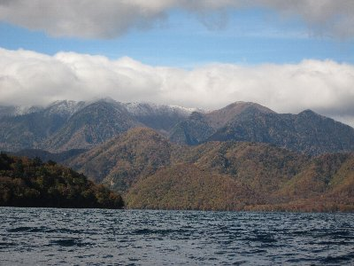
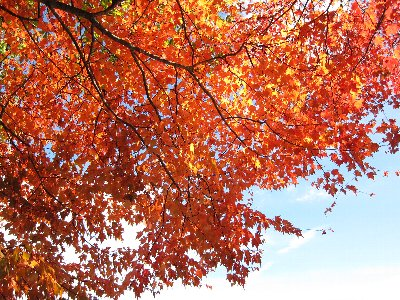
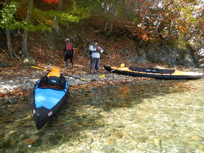

中禅寺湖カヤック | 2012年10月 幹事：maru |
|---|---|
| 10月も半ばになると、紅葉の名所から見頃情報が入ってきます。奥日光もその一つ。いろは坂を登った先にある「中禅寺湖」も、紅葉シーズンともなればTVで紹介され、休日ともなれば大勢の観光客であふれかえります。 そんな中禅寺湖を、カヤックで湖上から紅葉を眺めよう！とmaruさんが誘ってくれたので、平日に行ってみました。 | |
|  雪を被っている白根山 |  カヤック組み立て |
| 静岡を朝4時半に出発し、高速を乗り継ぎ、片道340kmの日帰りツアーです。 中禅寺湖には9時半到着です。標高1269mだったかな？ かなり高い場所にあるため、紅葉もちょうど見頃で、モミジも真っ赤になっています。天気も上々で、湖畔から男体山がそびえています。 驚くべきことに、湖畔から見える山（白根山）に雪が積もっていました。雲が掛っていて、今まさに降っている様子です。寒いはずだ。 10月とはいえ標高1200m超は、風が冷たく上着が無いと寒いです。 maruさんのカヌー仲間と合流して、カヤック組立後10時半に出航しました。 | |
 良い色でしょう♪ |  晴れていて最高でした 見える建物は、何処かの大使館別荘だとか |
| 風が岸に向かって吹いていたので、波が押し寄せてきます。カヤックは横波に弱いんですよね。maruさんが出艇のさいに波を被ってしまいました。パンツがびしょ濡れです。 目指すは八丁出島ってところ。湖畔にちょっぴり出っ張っている場所があって、そこの紅葉が良いそうです。 向かい風で漕ぐのは大変です。艇は風向きとは直角になりたがるので、漕ぎたい方向になかなか行けず、無駄な体力を消耗します。 | |
 八丁出島 |  |
| 湖全体で紅葉はしているのですが、八丁出島だけは別格みたいで、ここだけ赤色に染まる木が多いのか、色鮮やかです。葉の具合をみると今が最盛期で、今後は枯れ葉となってしまいそう。今週末でもあやしいかもしれませんね。良い時期に来ました。 出島で遮られているのか、風もなく波も立たなくて、の〜んびりと湖面を漂いながら紅葉鑑賞が出来ます。・・・・・の〜んびりと、漂っているだけですが幸せを感じます。 出島辺りを鑑賞後、もう少し足を伸ばして、上野島まで行きました。島と言っても小さくて、保護のためなのか周りを杭の様なもので囲われています。上陸はしない方がよさそうですね。 | |
 カヤックと男体山 |  ベストタイミングでしたね |
| 近くの浜で上陸＆休憩しました。今日はお昼持参ではなかったので、飲み物とお菓子位しかありませんが、ほっと一息です。あ〜、コンロ持ってきてお湯沸かしてカップラーメンでも食べたかった！ 帰りの時間も有るので、休憩後は一直線に出発地点へ。約2時間位の旅でしたが、とても満足です。帰りの首都高渋滞は勘弁して欲しいですね。 | |
 水面にモミジが浮いてるから・・・ （CM上の演出が加わってます） |  ちょこっと上陸して休憩 |
| 写真：がん１０３＆maru＆べっしー コメント：べっしー | |